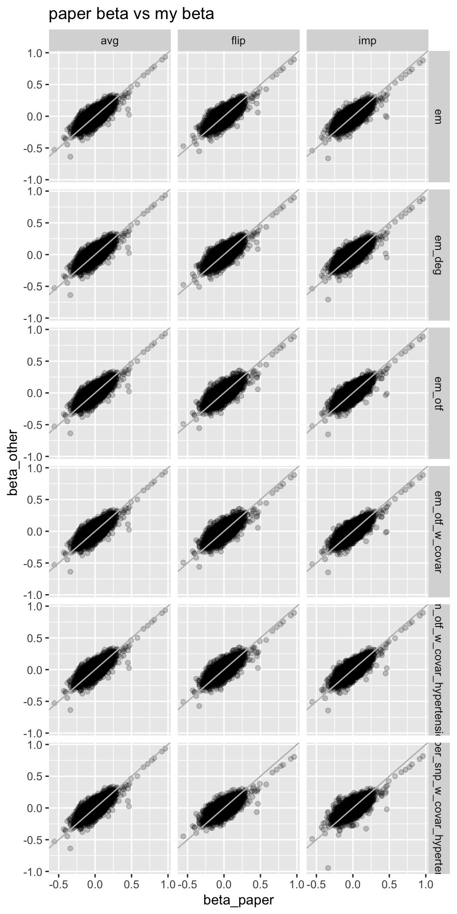
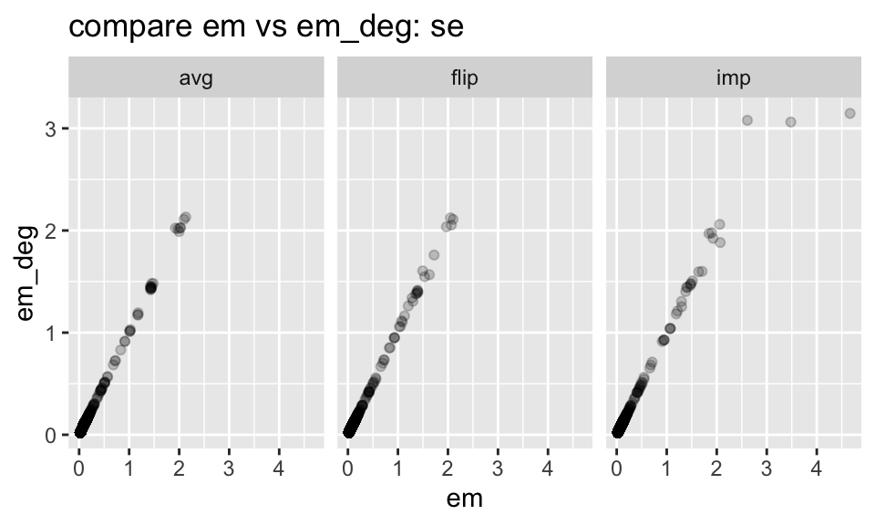
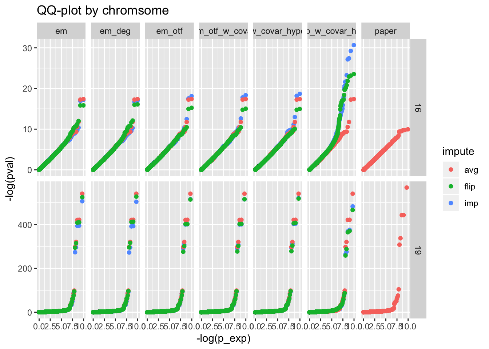
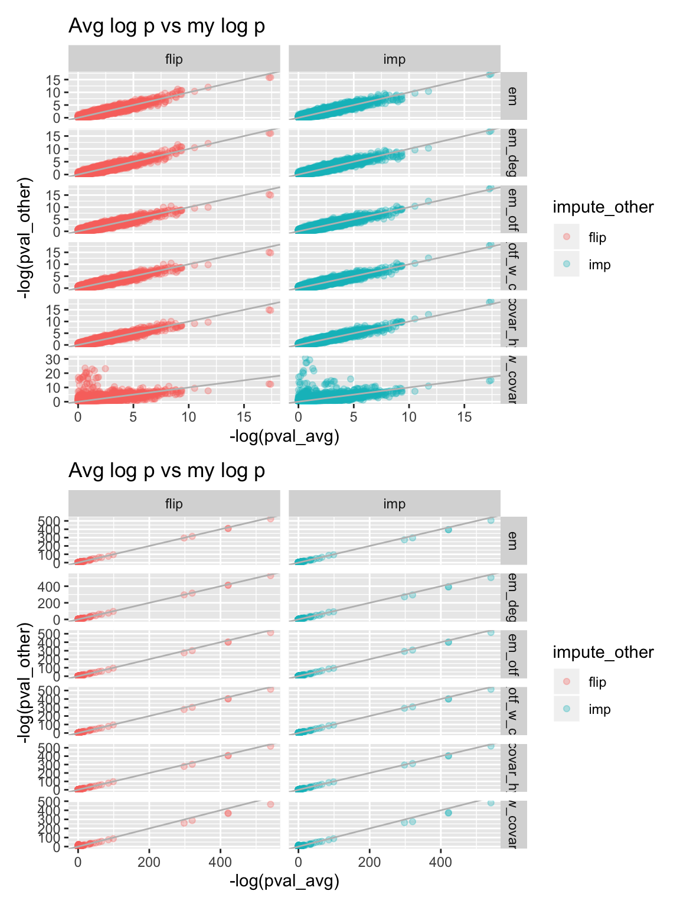
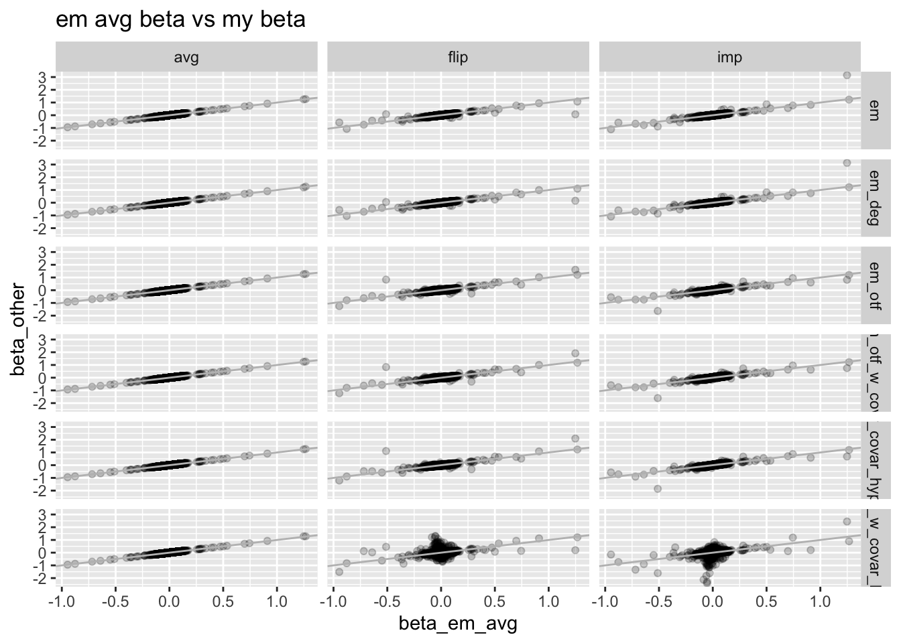
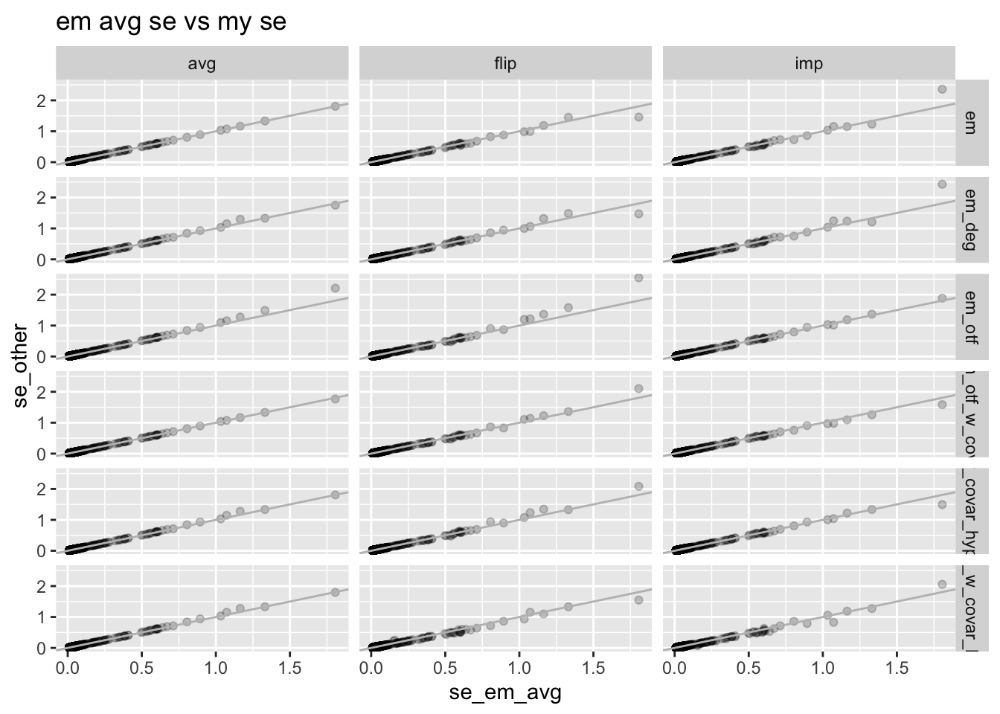
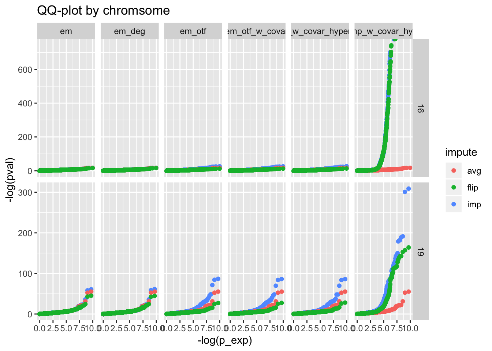
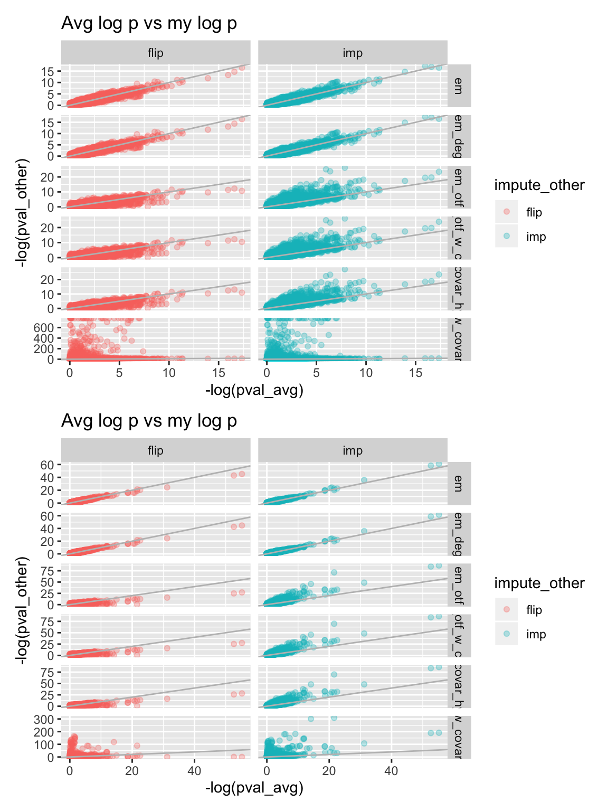

rm(list = ls())
library(ggplot2)
library(dplyr)
library(patchwork)
library(data.table)
library(reticulate)
library(pander)
options(datatable.fread.datatable = FALSE)
np <- import("numpy")
set.seed(2020)
source('../code/rlib_misc.R')I’ve implemented a pipeline doing the haplotype imputation based GWAS which includes three major scripts:
scripts/prs/naive_prs.pyscripts/haplotype_imputation/impute_parent_of_origin.pyscripts/logistic_gpu/run_haplo_logistic_solver.pyAs first pass effort, I run GWAS on paternal phenotype with imputed haplotype (Alzheimer’s disease, AD). The result is directly comparable to the paternal GWAS on AD reported in Marioni et al. (2018). I tested on chromosome 16 and 19.
Two imputation (labeled as imp) approaches are tested: 1) sex-specific EM (labeled as em); 2) non sex-specific EM (as em_deg). Besides, I include \(\Pr(Z) = 0.5\) as avg, and flip which flip the imputation by using \(1 - Pr(Z)\).
Besides, I also run on heart disease (HD) on the side, though I don’t have an existing GWAS to compare to.
Some functions.
to_df = function(mat) {
df = as.data.frame(mat)
colnames(df) = c('beta', 'se', 'convergence')
return(df)
}
read_from_npy = function(filename, pos, trait_idx) {
check_imputer = np$load(filename)
df_trait2 = rbind(
to_df(check_imputer[1, trait_idx, , ]) %>%
mutate(snpid = 1 : nrow(.), position = pos, impute = 'imp'),
to_df(check_imputer[2, trait_idx, , ]) %>%
mutate(snpid = 1 : nrow(.), position = pos, impute = 'avg'),
to_df(check_imputer[3, trait_idx, , ]) %>%
mutate(snpid = 1 : nrow(.), position = pos, impute = 'flip')
)
# extract snps that converge
df_trait2 = df_trait2 %>% filter(convergence == 1, !is.na(se), se > 0) %>% filter(abs(beta) < 100, se < 5)
df_trait2
}
signed_beta = function(beta, allele_ids, a1, a2) {
ref = unlist(lapply(strsplit(allele_ids, ','), function(x) {x[1]}))
alt = unlist(lapply(strsplit(allele_ids, ','), function(x) {x[2]}))
obeta = rep(NA, length(beta))
obeta[ref == a2 & alt == a1] = beta[ref == a2 & alt == a1]
obeta[ref == a1 & alt == a2] = -beta[ref == a1 & alt == a2]
return(obeta)
}snp_map = fread('zcat < ~/Desktop/tmp/haplotype-po/snp_map_for_neale_lab_gwas.with_sign.tsv.gz', header = TRUE, sep = '\t')
gwas_father = fread('~/Downloads/2_UKB_AD_paternal_summary_output_June2019.txt', sep = ' ')
methods = data.frame(method = c('em', 'em_deg', 'em_otf'), prefix = c('test_sanity_imputer_chr', 'test_sanity_imputer_deg_chr', 'test_sanity_imputer_otf_chr'))
dl = list()
dl[[1]] = list()
dl[[2]] = list()
for(chr_num in c(16, 19)) {
pos = snp_map %>% filter(chrom == chr_num) %>% pull(pos)
for(m in 1 : nrow(methods)) {
for(i in 1 : 2) {
if(!file.exists(paste0('/Users/yanyul/Desktop/tmp/haplotype-po/', methods$prefix[m], chr_num, '.npy'))) {
next
}
df = read_from_npy(
paste0('/Users/yanyul/Desktop/tmp/haplotype-po/', methods$prefix[m], chr_num, '.npy'),
pos,
i
)
df = df %>% mutate(chr = chr_num, method = methods$method[m])
dl[[i]][[length(dl[[i]]) + 1]] = df
}
}
}
df = list()
info = c('HD', 'AD')
for(i in 1 : length(info)) {
df[[i]] = do.call(rbind, dl[[i]]) %>% mutate(trait = info[i])
}
df = do.call(rbind, df)df_ad = df %>% filter(trait == 'AD')
extract_snp = snp_map %>% select(chrom, pos, allele_ids) %>% filter(chrom %in% c(16, 19)) %>% inner_join(
gwas_father,
by = c('pos' = 'BP', 'chrom' = 'CHR')
)
extract_snp = extract_snp %>% mutate(beta = signed_beta(Beta, allele_ids, A1, A2)) %>% mutate(impute = 'avg', method = 'paper')
df_ad = rbind(
df_ad %>% select(beta, se, position, impute, chr, method),
extract_snp %>% select(beta, SE, pos, impute, chrom, method) %>% rename(se = SE, position = pos, chr = chrom)
)
df_ad %>% group_by(method, impute) %>% summarize(nsnp = n()) %>% pander| method | impute | nsnp |
|---|---|---|
| em | avg | 37484 |
| em | flip | 37484 |
| em | imp | 37484 |
| em_deg | avg | 37511 |
| em_deg | flip | 37511 |
| em_deg | imp | 37511 |
| em_otf | avg | 37484 |
| em_otf | flip | 37484 |
| em_otf | imp | 37484 |
| paper | avg | 36869 |
df_paper = df_ad %>% filter(method == 'paper')
df_paper_plot = df_paper %>% inner_join(df_ad %>% filter(method != 'paper'), by = c('position', 'chr'), suffix = c('_paper', '_other'))
df_paper_plot %>% ggplot() + geom_point(aes(x = beta_paper, y = beta_other), alpha = .2) + facet_grid(method_other~impute_other) + ggtitle('paper beta vs my beta') + geom_abline(slope = 1, intercept = 0, color = 'gray')
# compare em vs em_deg
df_ad_plot = df_ad %>% filter(method %in% c('em', 'em_deg')) %>% reshape2::dcast(position + impute + chr ~ method, value.var = 'beta')
df_ad_plot %>% ggplot() + geom_point(aes(x = em, y = em_deg), alpha = 0.2) + facet_wrap(~impute) + ggtitle('compare em vs em_deg: beta')## Warning: Removed 81 rows containing missing values (geom_point).df_ad_plot = df_ad %>% filter(method %in% c('em', 'em_deg')) %>% reshape2::dcast(position + impute + chr ~ method, value.var = 'se')
df_ad_plot %>% ggplot() + geom_point(aes(x = em, y = em_deg), alpha = 0.2) + facet_wrap(~impute) + ggtitle('compare em vs em_deg: se')## Warning: Removed 81 rows containing missing values (geom_point).
df_ad_qq = df_ad %>% mutate(pval = beta2pval(beta, se)) %>% group_by(method, impute, chr) %>% mutate(p_exp = rank(pval) / (n() + 1))
df_ad_qq %>% ggplot() + geom_point(aes(x = -log(p_exp), y = -log(pval), color = impute)) + facet_grid(chr~method, scales = 'free_y') + ggtitle('QQ-plot by chromsome')
df_avg = df_ad_qq %>% filter(impute == 'avg')
df_avg_plot = df_avg %>% inner_join(df_ad_qq %>% filter(impute != 'avg'), by = c('position', 'chr', 'method'), suffix = c('_avg', '_other'))
p1 = df_avg_plot %>% filter(chr == 16) %>% ggplot() + geom_point(aes(x = -log(pval_avg), y = -log(pval_other), color = impute_other), alpha = 0.3) + facet_grid(method~impute_other, scales = 'free') + ggtitle('Avg log p vs my log p') + geom_abline(slope = 1, intercept = 0, color = 'gray')
p2 = df_avg_plot %>% filter(chr == 19) %>% ggplot() + geom_point(aes(x = -log(pval_avg), y = -log(pval_other), color = impute_other), alpha = 0.3) + facet_grid(method~impute_other, scales = 'free') + ggtitle('Avg log p vs my log p') + geom_abline(slope = 1, intercept = 0, color = 'gray') # + coord_cartesian(xlim = c(0,25), ylim = c(0,25))
p1 / p2
df_hd = df %>% filter(trait == 'HD')df_em_avg = df_hd %>% filter(method == 'em', impute == 'avg')
df_em_avg_plot = df_em_avg %>% inner_join(df_hd, by = c('position', 'chr'), suffix = c('_em_avg', '_other'))
df_em_avg_plot %>% ggplot() + geom_point(aes(x = beta_em_avg, y = beta_other), alpha = .2) + facet_grid(method_other~impute_other) + ggtitle('em avg beta vs my beta') + geom_abline(slope = 1, intercept = 0, color = 'gray')
df_em_avg_plot %>% ggplot() + geom_point(aes(x = se_em_avg, y = se_other), alpha = .2) + facet_grid(method_other~impute_other) + ggtitle('em avg se vs my se') + geom_abline(slope = 1, intercept = 0, color = 'gray')
df_hd_qq = df_hd %>% mutate(pval = beta2pval(beta, se)) %>% group_by(method, impute, chr) %>% mutate(p_exp = rank(pval) / (n() + 1))
df_hd_qq %>% ggplot() + geom_point(aes(x = -log(p_exp), y = -log(pval), color = impute)) + facet_grid(chr~method, scales = 'free_y') + ggtitle('QQ-plot by chromsome')
df_avg = df_hd_qq %>% filter(impute == 'avg')
df_avg_plot = df_avg %>% inner_join(df_hd_qq %>% filter(impute != 'avg'), by = c('position', 'chr', 'method'), suffix = c('_avg', '_other'))
p1 = df_avg_plot %>% filter(chr == 16) %>% ggplot() + geom_point(aes(x = -log(pval_avg), y = -log(pval_other), color = impute_other), alpha = 0.3) + facet_grid(method~impute_other, scales = 'free') + ggtitle('Avg log p vs my log p') + geom_abline(slope = 1, intercept = 0, color = 'gray')
p2 = df_avg_plot %>% filter(chr == 19) %>% ggplot() + geom_point(aes(x = -log(pval_avg), y = -log(pval_other), color = impute_other), alpha = 0.3) + facet_grid(method~impute_other, scales = 'free') + ggtitle('Avg log p vs my log p') + geom_abline(slope = 1, intercept = 0, color = 'gray')
p1 / p2
Marioni, Riccardo E, Sarah E Harris, Qian Zhang, Allan F McRae, Saskia P Hagenaars, W David Hill, Gail Davies, et al. 2018. “GWAS on Family History of Alzheimer’s Disease.” Translational Psychiatry 8 (1). Nature Publishing Group: 1–7.